武汉“封城”后，志愿者车队故事
原文链接 备份链接 武汉“封城”后公共交通停运，自1月24日开始，路上开始出现民间自助形式的车队。私家车主轮班，车队昼夜不停，每天接送医护人员、运输医疗物资，每送一趟要用75%酒精浓度的消毒液喷洒一遍车辆，油钱、防护口罩、消毒液都自掏腰 …

数据来源：腾讯新冠肺炎疫情实时追踪
截至2月3日早上7时，
全国新冠肺炎确诊个案16615例，
武汉确诊个案5142例。
根据1月31日湖北省疫情新闻发布会，
截至30日24时，
武汉地区共有6万余名医务工作者参与救治；
共有42支医疗队支援武汉，医护人员4599人。

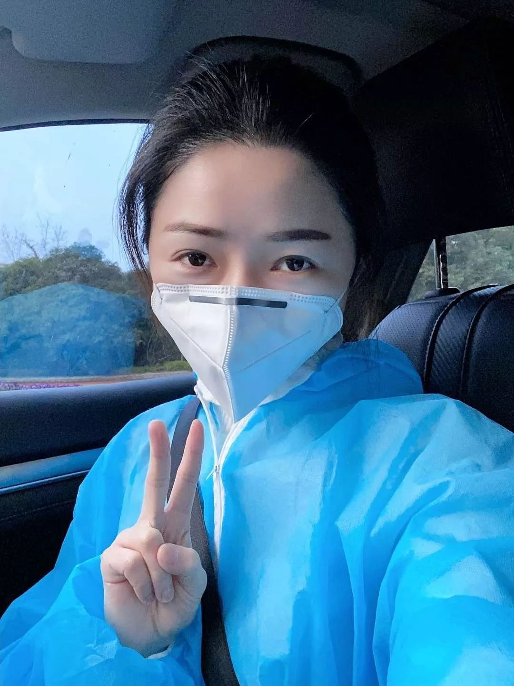
武汉123车队志愿者司机
封城之后的武汉，交通系统停运，
很多医护人员只能步行或骑车上班，
一线医护的防控物资供应也非常紧张，
不忍看到抗疫斗士的艰辛，
这个城市里最普通的市民行动了起来。
平时的工人、学生、白领、做小生意的，
顶着瘟疫蔓延的压力，自发成为了车队志愿者：
免费接送医护人员上下班；
或者想方设法地拉来紧缺物资，
送到一线医院、社区。
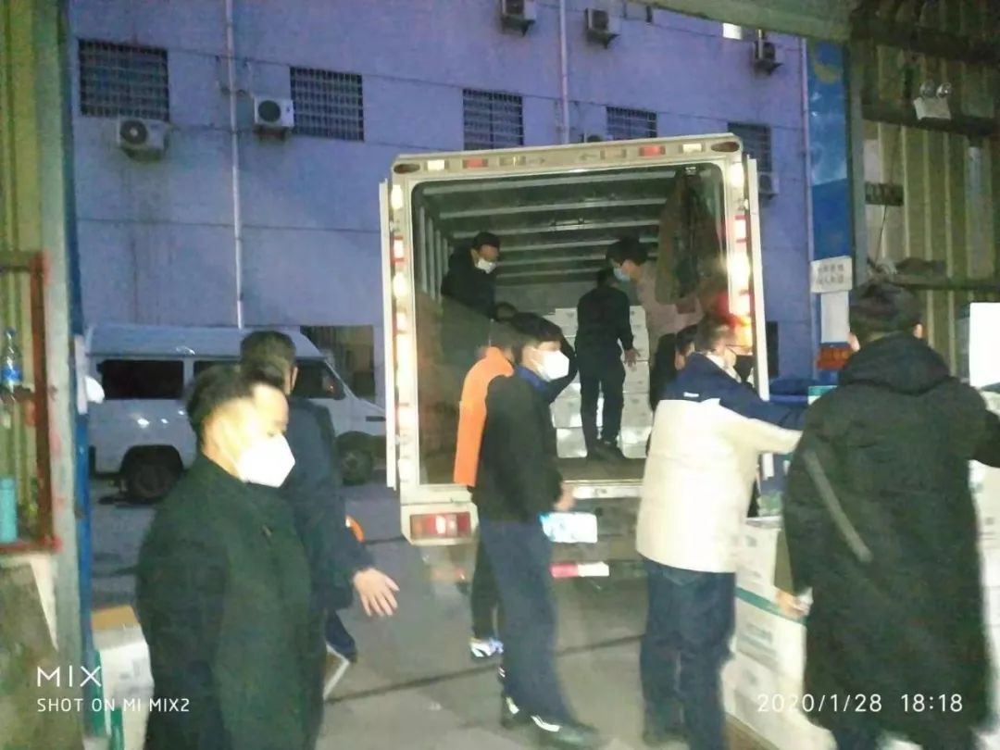
运送物资，武汉青山区车队志愿者何景林供图
志愿者们的防护装备非常基础，
有时忙起来，从早到晚连轴转，
没有人收取分文报酬。
一条通过武汉的读者们了解到这些人，
最早我们联系上武汉123车队的黄晓民队长，
和武汉青山区志愿者车队，
他们又推荐了身边印象深刻的志愿者们，
“有个90后的小伙子，到处都看到他的身影”，
“你一定要好好采访下搞物资的老武，
虽然只认识几天，我是真佩服他……”
约访这些志愿者十分困难，
因为他们大部分时候在路上，
结束工作经常是夜晚，有时电话采访了一会，
他们就抱歉地说，
又要去接医护人员或者送物资了。

车队志愿者拍摄的“武汉加油”
一位车队的志愿者说，
“晚上接到了一个爷爷，
72岁，军医返聘回社区医院，
他早上走两个小时的路过江上班。
他说对打赢这场仗很有信心，
他不怕。所以我也不怕。
回家路上看到亮了灯，武汉加油。”
*撰文 * 倪蒹葭****


车队队长黄晓民接了一位刚值完24小时班的护士
“我们每天接送约200名医护上下班”
黄晓民 38岁
职业：商业地产 市场推广
疫情时期：武汉“123救援车队”队长
1月23号武汉封城之后，我组建了一支123救援车队。因为现在我唯一能做的就是开车送医护人员上下班了。
从公司到我家，会路过4家医院，封城前几天，我就经常看到有一些医护人员下夜班后拦车挺困难的。当时我想其实我可以顺一脚。

黄晓民1月23号手写的接送牌子
23号这天，武汉的交通系统停运，我很快想到他们要怎么上班？当晚就在微信上建了一个“武汉医生出行互助群”，找同事同学一起做司机志愿者，然后越来越多陌生人加入。
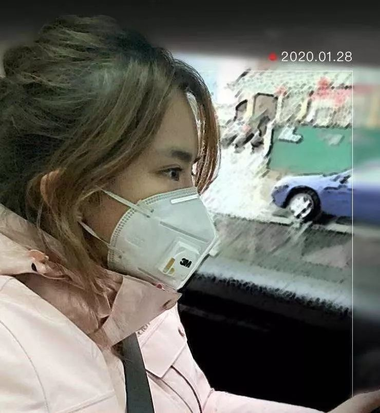
123车队的女孩志愿者司机
现在车队已经有90多个司机，最年轻的是97年出生的小伙子，1/10是女司机。我们每天接送约200名医护上下班。
取名”123车队”是因为封城的日期，也因为“1、2、3！”像一个开始行动的信号，速度比较快。后来我们发现和武汉话的“管得宽”挺谐音。
23号夜里我就接了一单，一开始没有帽子和护目镜，我戴上泳帽泳镜上阵了，后来一个年轻护士送了我防溅面罩。好在我的微信有1000多好友，朋友圈发了之后，信息就传递出去了，来自全国的志愿者给我寄来一些防护服、口罩，还有武汉一间小便利店，他们进到了84消毒液的货，专门为我们留了两箱。我们可以说是“开局一台车，装备全靠捡。”
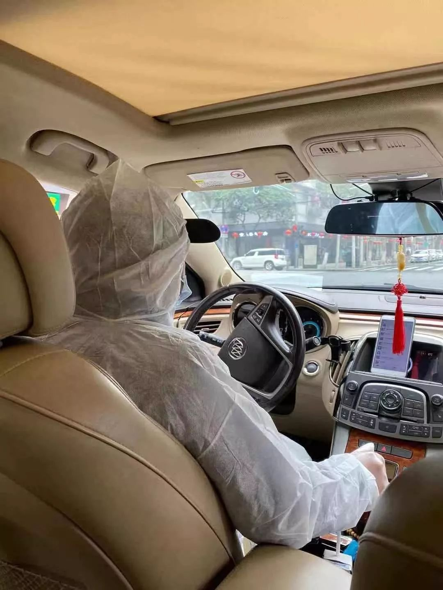
我们每人每天接3-5单，我最多的一天接了10单，早上6点多出门，晚上7点多回到家。一般都是带些干粮在车上吃，不敢多喝水，上厕所很不方便。
一位62岁被返聘的老医生告诉我，在我们车队接送之前，他要骑2小时15分钟的自行车上班。
很多护士其实都是95后的孩子，一个96年在ICU值班的护士，早上7点钟下夜班，上了我的车就睡着了，幸亏我知道她住在什么地方。
一位医生请我们去接他的父亲，他父亲也是医生，他们要去不同的医院服务，他没法照顾到父亲上班。
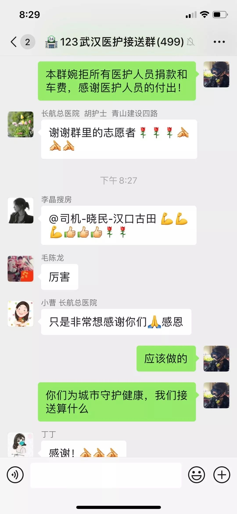
微信群中拒绝收取报酬
为了防护，我们要求医护和司机尽量少交谈，而且大家都是陌生人，车上总是很安静。我等红灯的时候会跟他们讲一下话。我问过一个护士等疫情过去，她最想干吗？她说想好好喝口水，再睡48个小时。
一位年轻的协和医院护士，她也不是属于呼吸科、感染科，但她说等火神山、雷神山医院建好，她要主动请缨过去前线。
很多医生护士下车的时候，直接丢下100块现金，或者微信上发红包，我们都是不收的，有时候我还会倒给他们红包。
我的太太在封城前，就带了1岁多的孩子回黄石老家过年。我微信告诉她想要做车队，她先是沉默了几分钟。然后我就给她讲了很多医护人员的状况，工作了一夜还要等班车，而且大医院才有班车，社区卫生服务中心没有……后来她就给我回：你去吧，保护好自己。

123车队志愿者
有些司机是瞒着太太出来的，我的同学让我发朋友圈千万不要提到他，他是跟太太说是出来打麻将的，麻将搭子都很健康，或者说去钓鱼。
昨天有一个单，是要从武汉八医院去江夏，全程30公里，刚看到我还担心这个单没人接，但很快就有司机说：没人去，我去！
我们群除了司机，还有20个后勤志愿者，他们每天搜集医护和司机的出行信息，协调物资，想办法把捐助的物资送进来，经常从早上忙到凌晨一两点。


志愿者拿着车队队标
我现在和父母住在一起，家里就是一个物资中转点，我们收到了捐助的300个口罩，300件防护服，但网友募捐的1000个护目镜还卡在路上，我是给志愿者分发物资的人，检查好他们的3证1单（身份证、驾驶证、行驶证、保险单），就发物资。每个人戴着口罩，互相也不认得，大家都很少话但动作迅速。
朋友还为车队设计了队标，后勤志愿者打印好，大家分头去取，贴在车子挡风玻璃下方，交警看到我们的标志，就会放行。
我们身边的故事就更多了，有一对新婚夫妻，才装修好的婚房就在后湖中心医院附近的小区，他们把新房免费给医护人员住，连一点押金都不肯收，这个事我觉得自己都做不到。
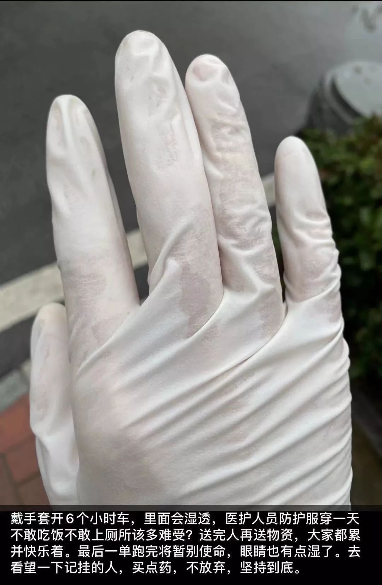
黄晓民的朋友圈
为了要通风，我们的车窗一直开着，武汉清晨特别冷，经常是零下1℃，而且司机都穿上防护服和手套，很容易流汗，所以我们20%的司机现在都有感冒的症状，我也开始咳嗽了。
28号是疫情爆发期，武汉新增了800例确诊，我感觉到压力特别大，哭了两回，因为车队是我发起的，但我没法为志愿者的生命安全负责。所以我就写一个倡议，我们从1月29号开始，暂停接单，当我们能获取en14126type4级别以上的防护服，和N95口罩，如果城市还需要我们，我们会继续接送医护人员。


往医院送紧缺物资
但实际29号之后，我们车队并没有停止，主要是帮忙往一线运输物资。我也通过朋友想方设法地购买了一些。物资真的非常紧缺，我把非医用的护目镜都送去了，医生发消息说哪怕是一块玻璃都要。
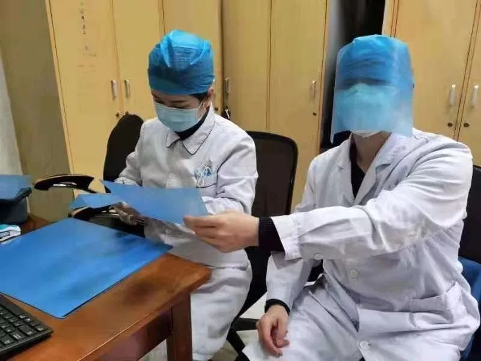
武汉医护在自制防护面罩
1月30号下午4点，我接到10箱酒精，发了朋友圈后很多医生护士来找我，都说需要。有个八医院的医护也来找我，我奇怪问你们八医院不是主要做肛肠科吗，他说现在也是定点医院了。然后发来一张图，是他们医生自己动手，用文件夹做防护面罩。我看了这张图绷不住了，大哭。
我压力是山大，一方面怕志愿者生病，怕自己家里人生病，另一方面怕医护资源不够。
等到疫情过去的那天，我最想见我的家人，抱抱亲亲孩子。
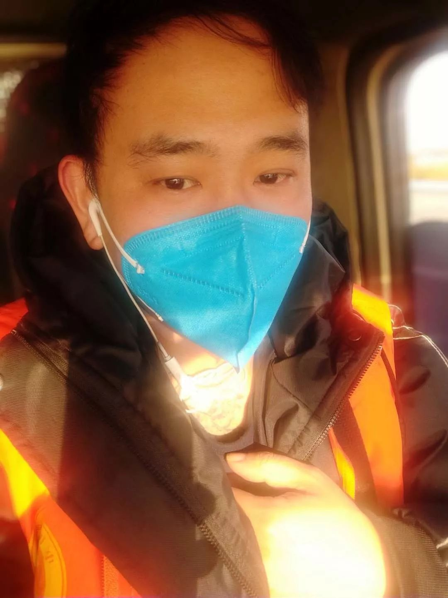
“我每天睁开眼睛第一件事，
想的就是去哪搞物资”
武耀光 33岁
职业：文身师
疫情时期：为武汉筹集、运送物资
我是中国文身协会湖北分会的会长，陕西人，娶了武汉媳妇，在武汉生活了多年，平时开一间文身工作室。
文身师的职业挺尴尬，很多人觉得是不良分子，所以封城之后，“青山区疫情防控志愿队伍”接受我的报名加入，我还挺高兴。

武耀光报名青山区疫情防控志愿者
我很快就发现医护和志愿者双方都非常缺乏防护物资，1月25号在中国文身协会会长天佑老师的支持下，我向协会中全国各地的文身师募集资金，第一次就筹到了77250元，我自己也捐了1万块。这些钱全部都用来购买紧缺物资。
买物资主要有几个渠道，去找武汉周边的一些口罩生产厂，不过现在大部分被政府接管了，这个也是好事。还有大型志愿者团队的物资群，生产商会把他们的物资和合格证发进来，医生也在群里，他们看了说可以使用，我们就购买运过来。另外就是去找囤积了物资的二手商人。

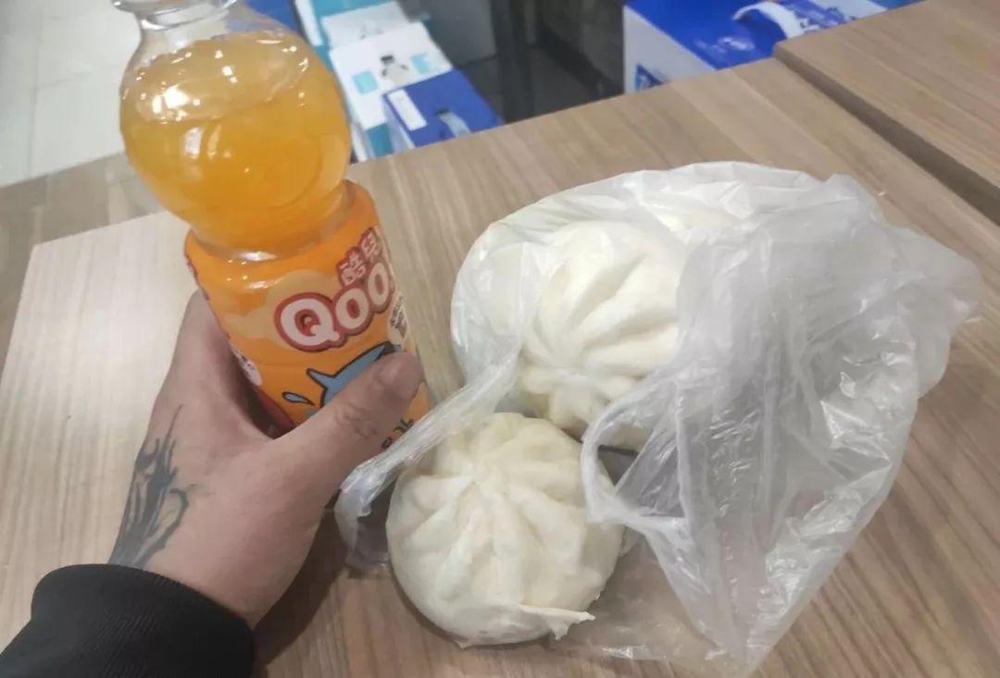
运输物资途中的中饭
买到物资之后，第一时间送到各个有需要的医院科室。一些物资达不到医用标准，我们就捐给社区、志愿者、一线记者、警察大队等等。
比如给武汉市公安局武昌分局送了N95口罩和护目镜，因为分局的警察要去武汉七医院驻守。他们只有一些医用外科口罩，防护服轮流着穿，根本不够，我知道他们有些人已经疑似感染，在家自我隔离。
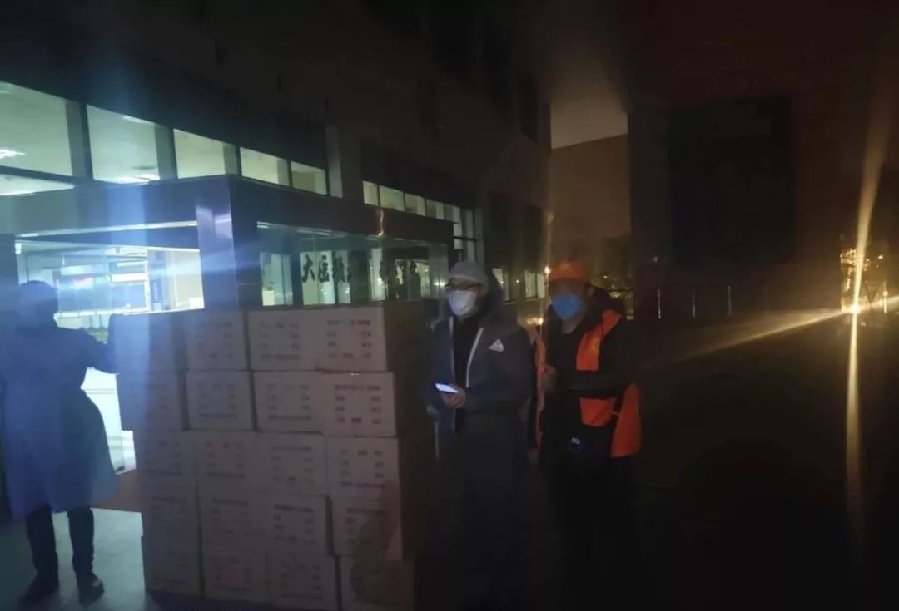
深夜帮忙搬运口罩到达中南医院
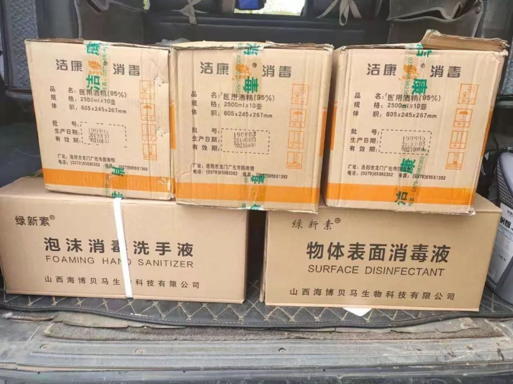
第二天一早出发，采购消毒液
31号晚上，我和另外的志愿者奔走在各个口罩厂商中间讨价还价，医用规格的口罩是每个1.8元，一直2月1号凌晨，终于拿到了货，连夜开车，凌晨2:40送了4万个口罩到达武汉中南医院，我还买了几万个单价1.25元的口罩，可以给非一线的人员。
这晚回到家找个沙发就躺下了，睡了3个小时，2月1号上午又去仙桃采购，买到了500斤酒精，50斤消毒液，给武汉一六一医院送了15斤酒精，20斤消毒液，给三医院、金银潭医院送……又去了各个社区发放，到了现在（采访是在2月1号晚上9点多进行）已经全部发空了。
我最大的感受就是，给每一个医院送东西对他们来说都是雪中送炭。医护对我也很好，给我塞小瓶的消毒液，只允许我站在大门外头等他们过来拿，医者父母心。

武耀光和领导商量医疗队物资采购
因为我是地道的陕西娃，看到陕西医疗队来了就很激动，29号我去他们酒店看看有什么能帮上忙的，虽然住在酒店，但生活用品也还是有顾及不到的地方，我和医疗队领导商量，看他们缺什么，采购了洗衣液、盆、眼药水各种东西，给他们送去。
这几天通常是凌晨4点睡觉前，把送的物资做一个清单整理，早上7、8点醒来就开始找物资，中午的时候买到物资，联系需要的医院、社区开始送。

其实我自己都没有驾照，全程是车队的志愿者跟我一起运送，这些武汉的本地人让我很感动，能看到武汉非常团结的一面。我每天早上扒开眼睛第一件事，就是想今天去哪买物资，再送哪些医院，做梦买到了口罩都是要笑醒的。
现在我们的物资车停在路边上，你打电话来我们正好休息一会。但要先讲到这里了，群里说有30斤的酒精，我们要赶紧出发去买回来。
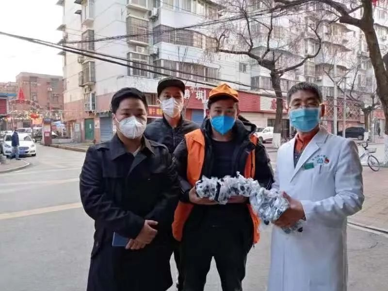
给医院送护目镜（左二是李峰，左三是武耀光）
“我帮老武开车送物资，
医生收到当宝贝一样”
李峰 27岁
职业：个体户，在武汉开紫燕百味鸡加盟店
疫情时期：志愿者司机
疫情爆发之前，我因为不知道情况，还跑去旅游了，1月19号在湖北神农架滑雪的时候摔裂了右边的肋骨，21号回到武汉看见新闻开始报道，我就想着能做点什么。
封城之后，一个开滴滴专车的朋友说政府会给每个大型社区配2-3台车，去做司机的话800块钱一天，问我要不要去。但我不想做这个，我加入了两个志愿者的群，一个是专门接送医护人员，一个是和老武（武耀光）接送物资。

志愿者李峰
因为肋骨骨裂还没修复，我开车久了就会疼，所以跑不了武汉市外，也不能搬运重物，只能在武汉市区内多做一些。
物资真的非常紧缺，1月30号下午我和老武去给青山区儿童医院送了15个护目镜，因为那有一批医生要上前线了，医生看到都当宝贝一样，太高兴了，还拜托我们再去找一些酒精。
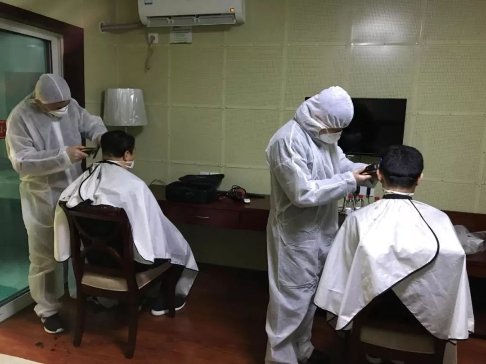
还有武汉市民志愿为医护人员剪头发
接送医护的志愿者群目前有357个人，大约1/4是司机，其余是医护，他们会在群里发出行的需求，但是积极在接单的司机可能只是5、6个，如果路程远的单子回应就更慢了。
1月28号我去江夏接了一个年轻护士来青山区的医院，来回60多公里，预约单几十分钟都没有人响应，我就接了，她是回家搬生活用品的，因为医院帮他们找到了酒店住。
1月29号送一个发热门诊30多岁的护士回家，她让我在楼下等一等，她拿趟东西又要去医院。因为自我隔离，她和女儿在家都不能见面。
医护都没有自己的时间，坐上车之后都是马上能睡着的状态。

李峰晾晒一下装备
刚开始，仅有的防护就是跟朋友拿的3个N95口罩，每一个消毒过之后重复用，能用3天，今天拆了最后一个口罩，发朋友圈求助之后，有人愿意再给我1个，又可以用3天。我和老武买到的防护服因为数量少都给医院了，自己一个也没舍得留。
我在家里面也是自我隔离，回家先要全身消毒，妈妈做好饭，等他们吃好回到房间之后，我再拿一次性筷子出来夹菜，回自己房间吃。
开车的时候，我主要想着下一个要去哪里，最好是一直在路上。这件事把我的生物钟也治好了，平时我都是睡到10点多，然后去自己店里看看，但最近每天6点就起来了。
现在是晚上9点半，就先说到这里了，我一会还要再出门去接两个医护，10点钟一个，12点一个，明天早上6点多还要去接一个住在汉口的，路程挺远。

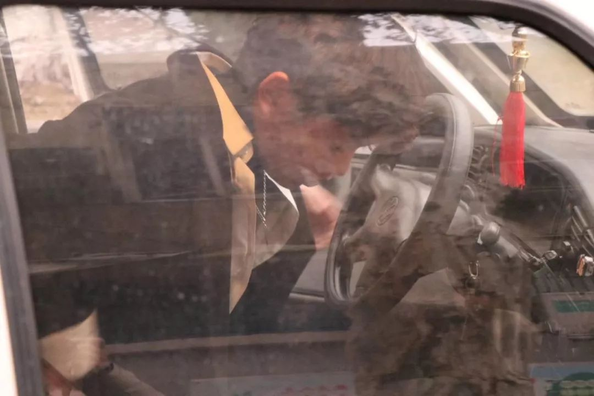
青山区车队志愿者李耀星
“其他志愿者看着我和小孩一样，
就问我多大，我说是99年生的”
李耀星 21岁
职业：武汉的大学生
疫情时期：青山区车队志愿者
我家在武汉青山区，也在武汉念大学，半年前拿到的驾照。看到青山区团委组织志愿者的消息，我就报名了免费接送医护人员。爸妈一直都是担心的，出门之前，妈妈会看着我戴好口罩，给我喷酒精。
我爸爸是退伍军人，有现在很需要的A2驾照，他也很想参加，但因为有些感冒，就自己在家隔离。

李耀星拍摄的车窗外
记得1月25号接了第一个单，是一个在武钢总医院值完班的护士，晚上9点下着小雨，她说幸亏我愿意来，否则她就要冒雨走到大道上去看有没有车。
早上7点接了一位97年的护士，她下车给我发消息说“特别想给你买份早餐，又怕耽误你时间。”这样简单的沟通让我觉得很温暖。
最忙的一天是去蔡甸区仓库接物资，有一千箱水、口罩手套等等，搬运的时候，其他志愿者看着我和小孩一样，就问我多大，我说是99年生的。

李耀星拍摄的车窗外
一个40多岁的女医生，封城之后，她要骑40分钟自行车上下班。我接她的时候，她特意带了酒精、口罩、连花清瘟胶囊送给我。后来我大学室友的妈妈出现疑似感染症状，在家自我隔离，但哪里都搞不到消毒的，我就想到了这位女医生，她得知后，把自己家的酒精匀给了我们。
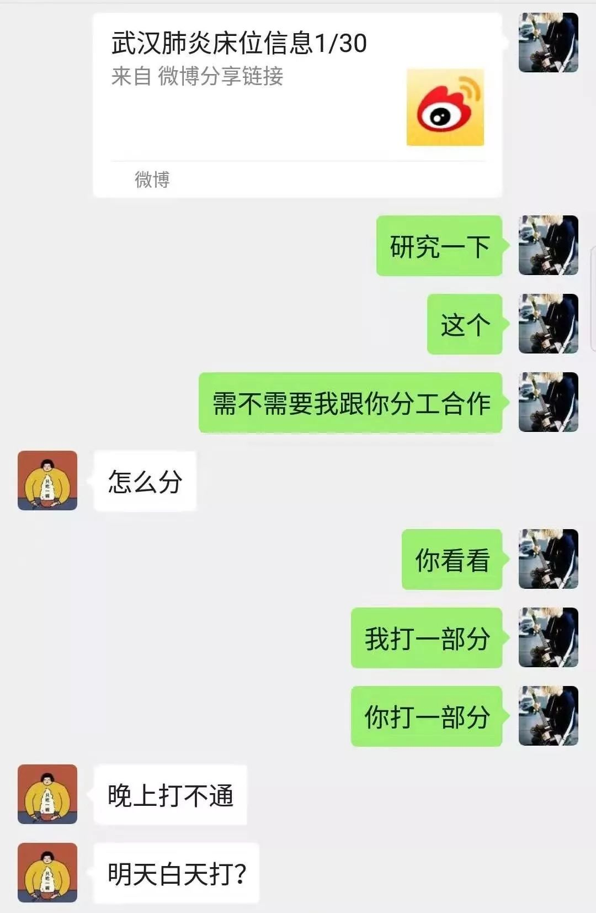
李耀星和大学室友的聊天记录，分头打武汉医院电话
1月27号，室友的妈妈更加严重了，室友买了制氧机，他妈妈不得不依赖氧气呼吸，不能间断，双唇发乌，1月29号，他们接到社区办的通知，在汉阳医院做核酸测试，护士告知6小时后可以拿到结果，但之后没有接到任何通知，一直都没有确诊。
室友的妈妈30号出现昏迷状况，送到汉阳医院抢救，人是稳定了，但是被告知无法住院。
他和爸爸跑了10多家医院，没有一家能够办理住院，现在他和爸爸都已经出现了感染症状，因为家中还有14岁的妹妹，他和爸爸都不敢回家，就睡在车上。1月31号凌晨两三点，我和室友分头打遍了武汉所有医院的电话，也没有用。
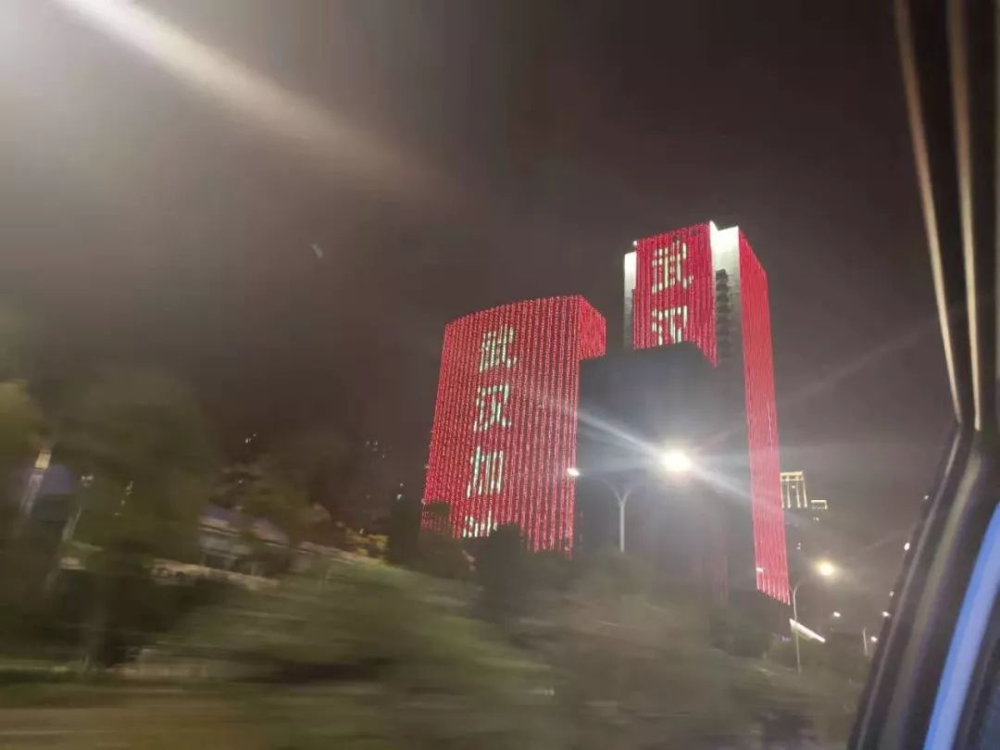
李耀星拍摄的车窗外
我室友的情况在武汉不是个例，还有特别特别多。
接送医护人员的路上，我车里一直循环着张国荣的歌《同步过冬》，“一个人拿伞，风会特别猛，同步过冬，一起对付寒风……走过寒冬，拥抱成功，改天想起这次不算冻。”
希望真如歌词结尾，“悲伤的偏不要给说中。”
特别鸣谢：武汉青山区车队志愿者何景林先生对采访的帮助
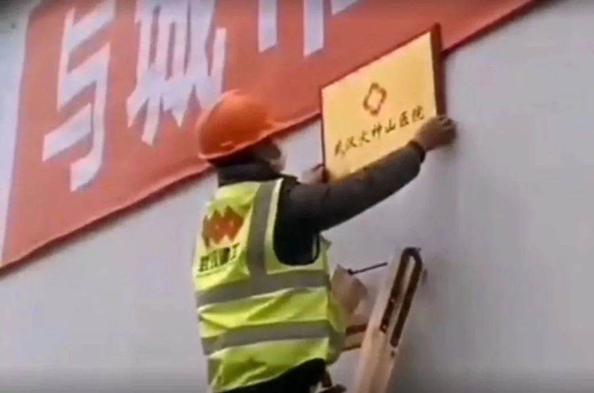
火神山医院挂牌，图片来源于网络
2月2日，武汉火神山医院正式挂牌，并于今天开始收治新型冠状病毒肺炎患者，这标志着抗击疫情进入了一个新的阶段。
在武汉封城的十多天里，普通市民身上的人性之光让人动容，他们被生活蹂躏又不卑不亢，一样遭受挫折又努力发光。
一条坚定地和大家站在一起，见证这些普通人的伟大，持续记录疫情中微弱而温暖的光。
我们期盼着2020年春暖花开的那一天，期盼着疫情全面结束的那一刻。

疫情依然严峻，针对以下人群，
我们正在寻找采访对象！
#我在疫情一线#
不论是您是在湖北还是全国其他地区，只要您是奋战在一线的医护人员、后勤补给人员、记者、患者或患者家属，我们希望听到您的见闻和最迫切的需求。
#我的武汉现场#
如果您正身在武汉，如果您愿意讲述在“封城”后的实地体验见闻，我们希望把它传递给更多人。
请通过以下方式联系一条编辑，我们期盼您的消息！
一条编辑部邮箱editor@yit.com
或直接在文章下留言。
请您留下所在地、职业，大致讲述您的见闻与故事，如合适我们将尽快与您取得联系，进行采访！
如有图片也欢迎一并发来。
▼

原文链接 备份链接 武汉“封城”后公共交通停运，自1月24日开始，路上开始出现民间自助形式的车队。私家车主轮班，车队昼夜不停，每天接送医护人员、运输医疗物资，每送一趟要用75%酒精浓度的消毒液喷洒一遍车辆，油钱、防护口罩、消毒液都自掏腰 …
原文链接 备份链接 ********** *****现在，志愿者们已经对各类口罩如数家珍。1月底，一家东莞工厂表示有一批口罩。“那是工业级别的N95，不能给医生用。”程雨拒绝了。“不能让热心被利用，也不能给医院制造麻烦。”她说。***** …
原文链接 备份链接 《战疫口述记》，是燃财经在新型冠状病毒肺炎期间推出的特别栏目，记录疫情亲历者的观察和感受。本文为第6篇，查看前5篇请点击《我和公司都快熬不住了》《节后返京，太太太南了》《我的“流浪”春节》《农村这样防肺炎》《我在武汉 …
原文链接 备份链接 目前，几个粉丝站的物资除了少量还在路上，大部分已经送到需要的人手里，然而尽管如此，全国各地的物资缺口仍然很大。 文 | 王超 高逸佳 薛雨霏 编辑 | 沈小山 “这些天大家也真的很拼了，晚上核对整理信息有时三四点才睡， …
原文链接 备份链接 Haylin是一名生活在武汉积玉桥的自由职业戏剧人。疫情爆发的这段日子，她说自己作为一个武汉人，“已经习惯了每天早上起来查有多少新增病例等等，晚上睡觉前看又有哪个医院在发求助消息的习惯”。为了出力，她参与了一个志愿者 …